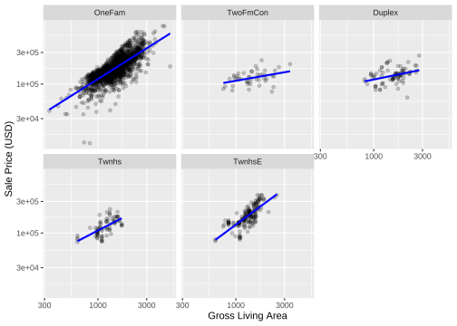

ggplot(ames_train, aes(x =Gr_Liv_Area, y =10^Sale_Price))+geom_point(alpha =.2)+facet_wrap(~Bldg_Type)+geom_smooth(method =lm, formula =y~x, se =FALSE, color ="blue")+scale_x_log10()+scale_y_log10()+labs(x ="Gross Living Area", y ="Sale Price (USD)")

1.1.3 特征构造
1.1.3.1 交互项
step_interact(~ interaction terms) , +分隔不同交互效应
Code
interact_rec<-basic_rec%>%step_interact(~Gr_Liv_Area:starts_with("Bldg_Type_"))interact_rec#> #> ── Recipe ──────────────────────────────────────────────────────────────────────#> #> ── Inputs#> Number of variables by role#> outcome: 1#> predictor: 6#> #> ── Operations#> • Collapsing factor levels for: all_nominal_predictors()#> • Interactions with: Gr_Liv_Area:starts_with("Bldg_Type_")
1.1.3.2 mutate
Code
basic_rec%>%step_mutate(prop =Longitude/Latitude, root_area =sqrt(Gr_Liv_Area), poly =Longitude^2)#> #> ── Recipe ──────────────────────────────────────────────────────────────────────#> #> ── Inputs#> Number of variables by role#> outcome: 1#> predictor: 6#> #> ── Operations#> • Collapsing factor levels for: all_nominal_predictors()#> • Variable mutation for: Longitude / Latitude and sqrt(Gr_Liv_Area), ...
basic_rec%>%step_ns(Latitude, deg_free =20)#> #> ── Recipe ──────────────────────────────────────────────────────────────────────#> #> ── Inputs#> Number of variables by role#> outcome: 1#> predictor: 6#> #> ── Operations#> • Collapsing factor levels for: all_nominal_predictors()#> • Natural splines on: Latitude
Code
library(patchwork)library(splines)plot_smoother<-function(deg_free){ggplot(ames_train, aes(x =Latitude, y =10^Sale_Price))+geom_point(alpha =.2)+scale_y_log10()+geom_smooth( method =lm, formula =y~ns(x, df =deg_free),# natural splines. color ="lightblue", se =FALSE)+labs(title =paste(deg_free, "Spline Terms"), y ="Sale Price (USD)")}(plot_smoother(1)+plot_smoother(5))/(plot_smoother(20)+plot_smoother(100))
1.1.4 特征降维
PCA
Code
recipe(Sale_Price~Neighborhood+Gr_Liv_Area+Year_Built+Bldg_Type+Latitude+Total_Bsmt_SF+First_Flr_SF+Gr_Liv_Area, data =ames_train)%>%step_pca(matches("(SF$)|(Gr_Liv)"))#> #> ── Recipe ──────────────────────────────────────────────────────────────────────#> #> ── Inputs#> Number of variables by role#> outcome: 1#> predictor: 7#> #> ── Operations#> • PCA extraction with: matches("(SF$)|(Gr_Liv)")